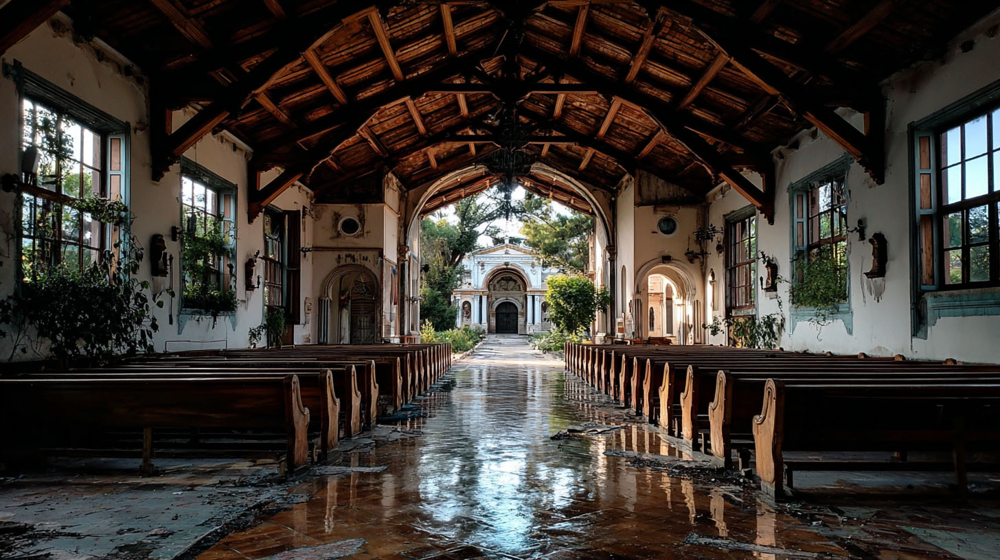

"The Lord is my light and my salvation; whom shall I fear?"
Mass is held daily at 7:00 AM and 6:00 PM. All who seek refuge and peace are welcome here. The doors are never locked to those in need.
> ENCRYPTED MESSAGE DECRYPTED // AUTHOR: S. KOVIC
> "The priest is a problem. We told him we needed the courtyard for three days to stage the transit vehicles. He didn't take the envelope. Instead, he walked up to the bell tower and started ringing it non-stop until the local police showed up to see what the commotion was. He has the whistleblowers in the crypt. We can't move."